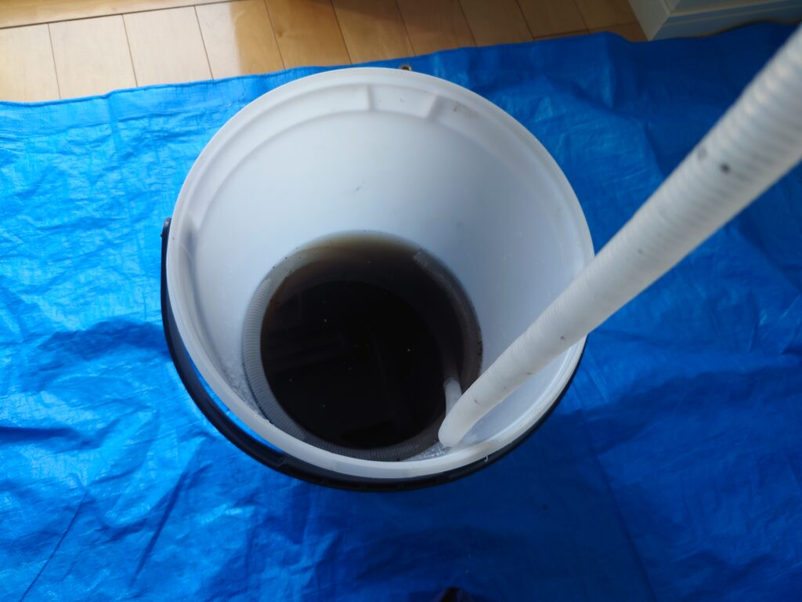
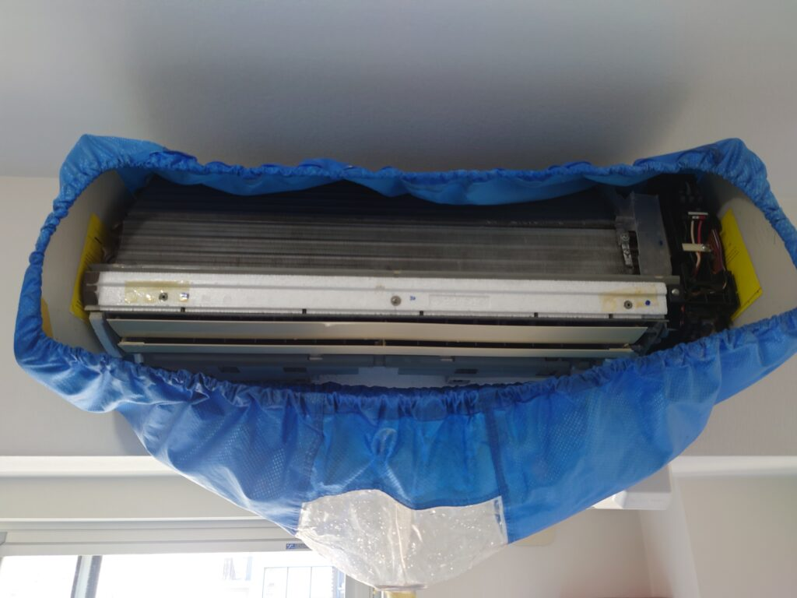
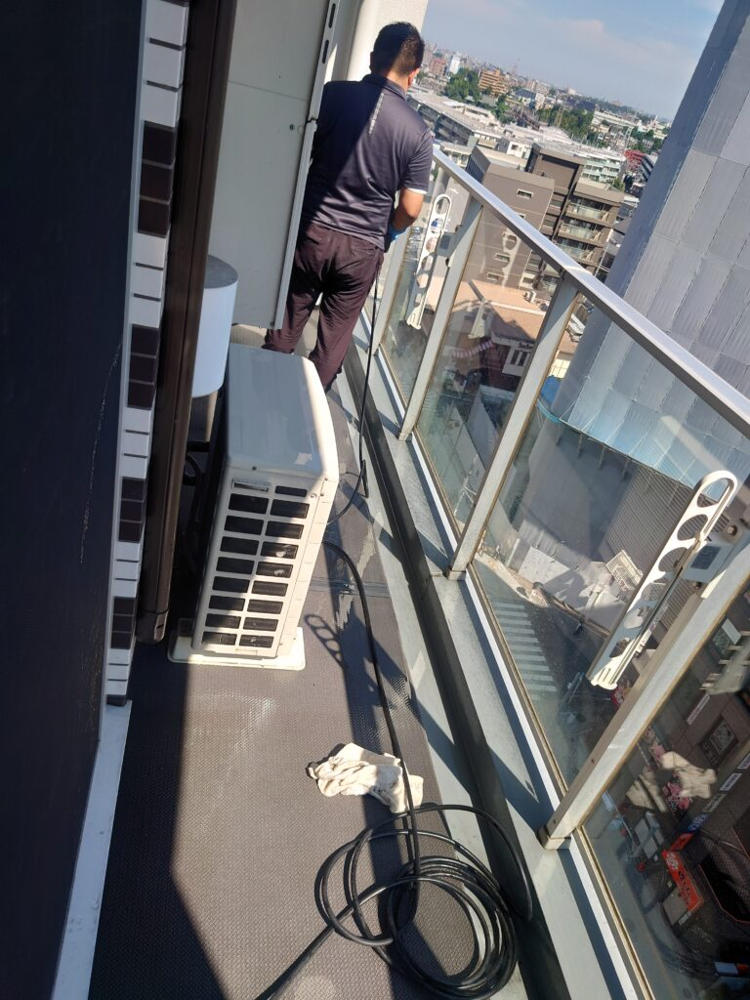
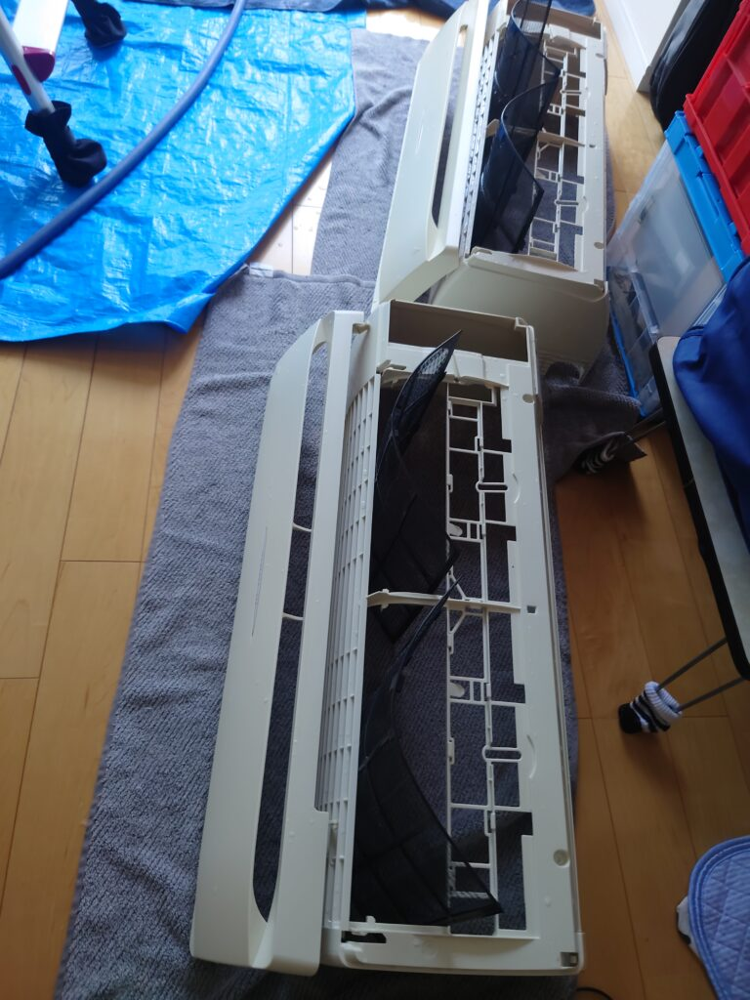

エアコン内部洗浄クリーニング 除菌コーティング、カビ防止コーティングをサービス実施中です!
エアコン内部洗浄クリーニング 除菌コーティング、カビ防止コーティングをサービス実施中です!エアコンクリーニングのお申し込みは、ご希望日程、エアコンのタイプ、駐車場の有無をお知らせください、宜しくお願いいたします!




エアコン内部洗浄クリーニング 除菌コーティング、カビ防止コーティングをサービス実施中です!エアコンクリーニングのお申し込みは、ご希望日程、エアコンのタイプ、駐車場の有無をお知らせください、宜しくお願いいたします!



